Intercambio · investigación · IA aplicada
China ↔ LATAM
Universidades y empresas de LATAM acceden a programas, laboratorios y tecnología vía China y socios locales.
«GOU: puente China–LATAM para universidades y empresas. Trabajamos de la mano con startups.»
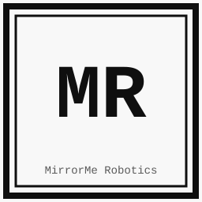
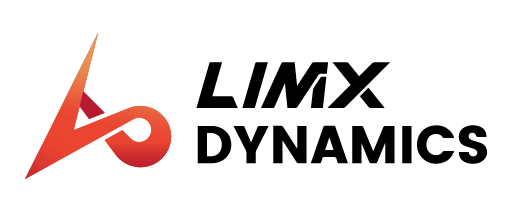
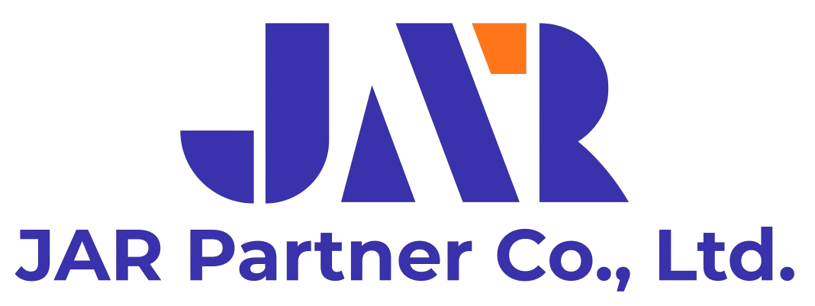
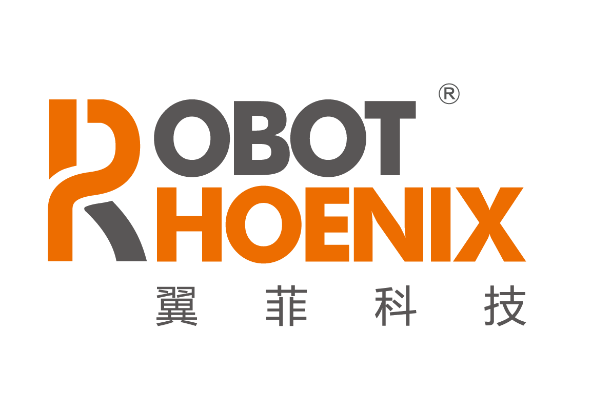
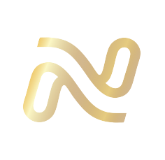
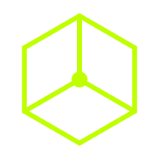
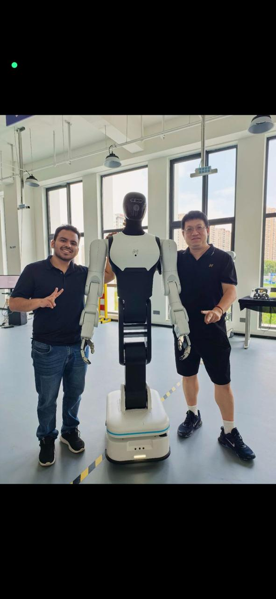
Diego Bruno Pozo Abregú lidera alianzas universidad–empresa y consolida el puente China–LATAM.
AlianzasUniversidad–empresaChina ↔ LATAMRaúl Joseph Bastidas Artica — Mechatronics Engineering · UPC 2026
Humanoides · teleoperación · robot learning · navegación semántica
Intercambio · visitas técnicas · investigación conjunta · financiamiento
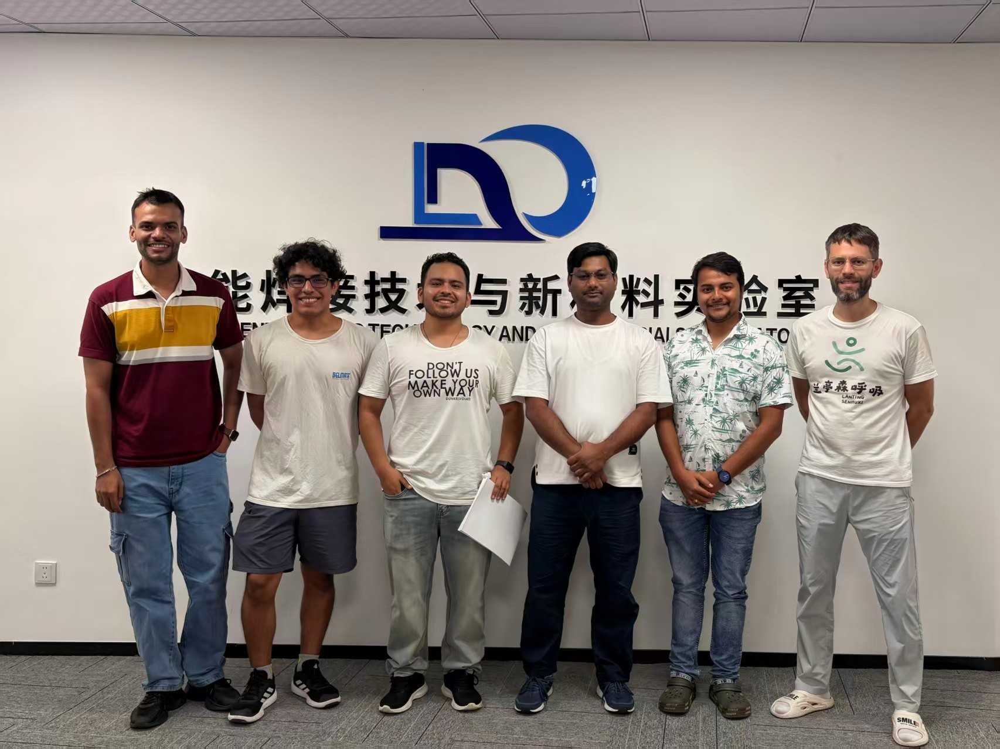
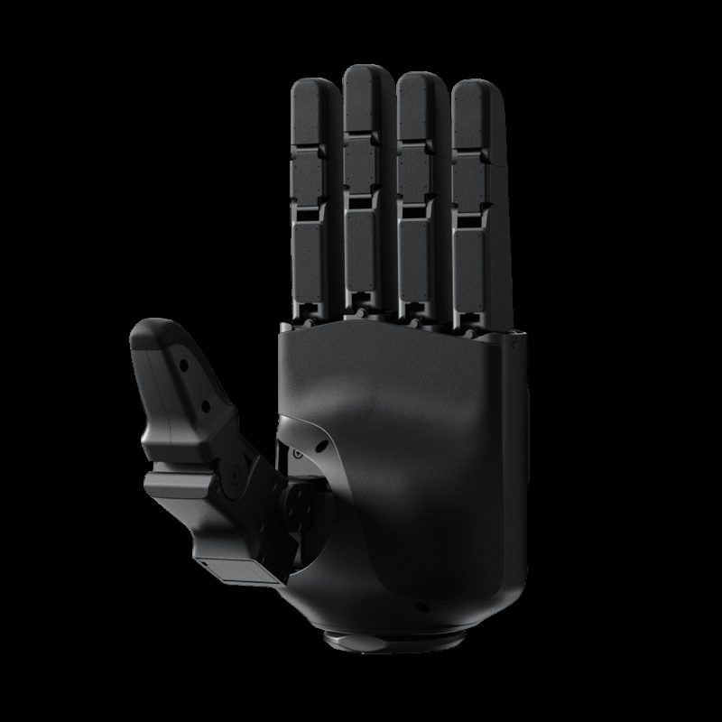
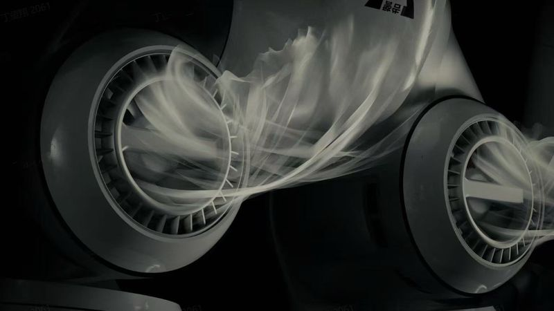
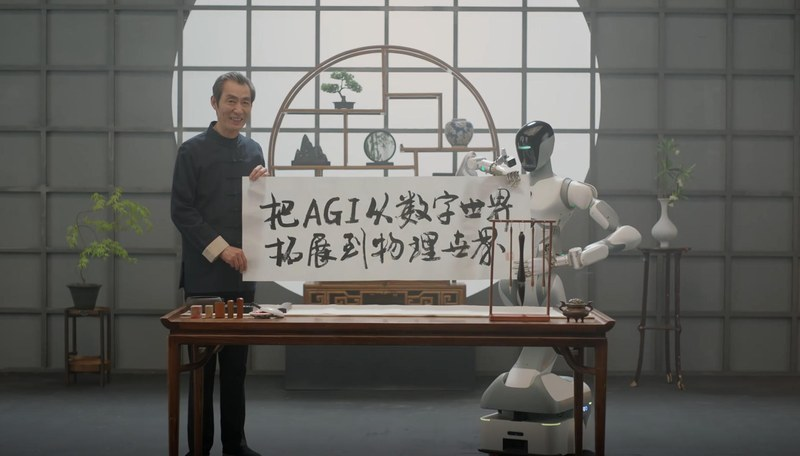
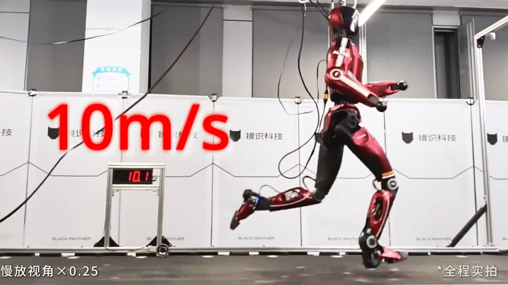
Veyon — multi-agente sobre datos reales, VR adaptativo y producto end-to-end (veyon.dev).
Mu Robotics (Founders Inc) — datos reales de calidad para desplegar robots fuera del lab (murobotics.ai).
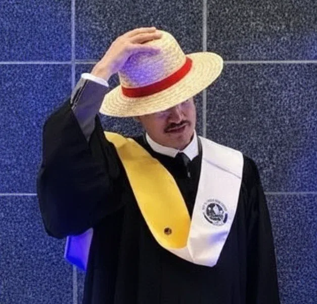
Founders in Residence en Founders, Inc. (f.inc)
GOU asesora a DINAUT en Industria 4.0. Alianza GOU–DINAUT con cobots UR3 / UR10.
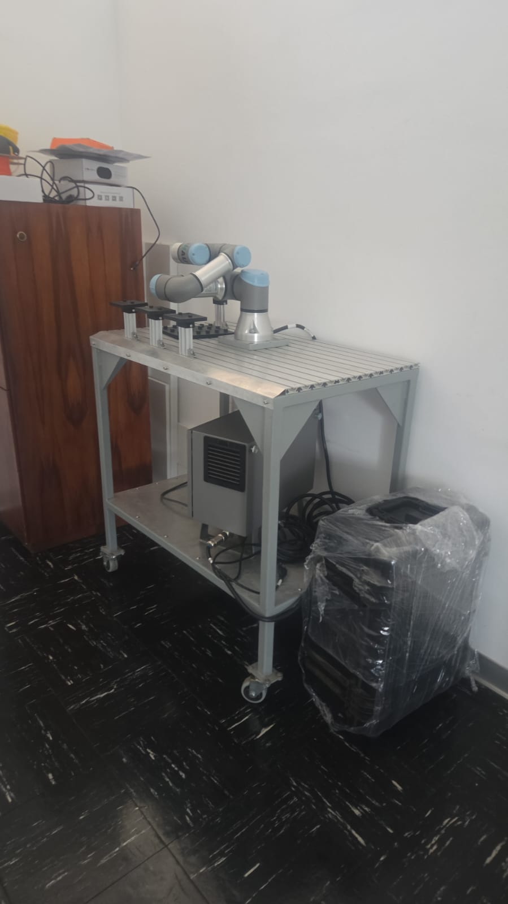
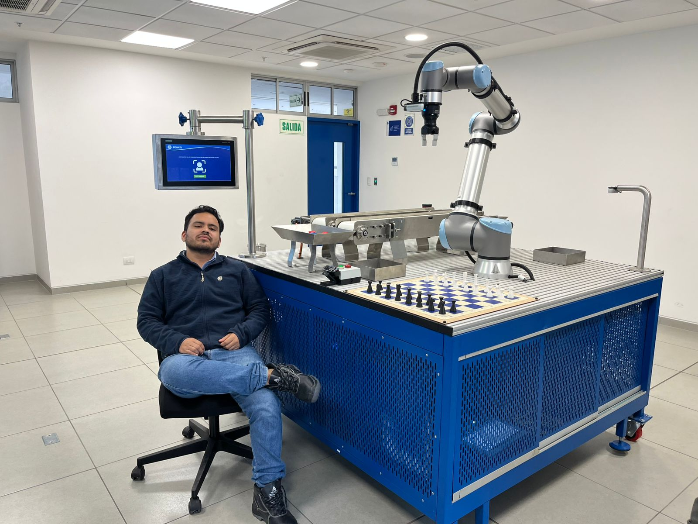
Desarrollo conjunto desde la universidad hacia aplicaciones reales.
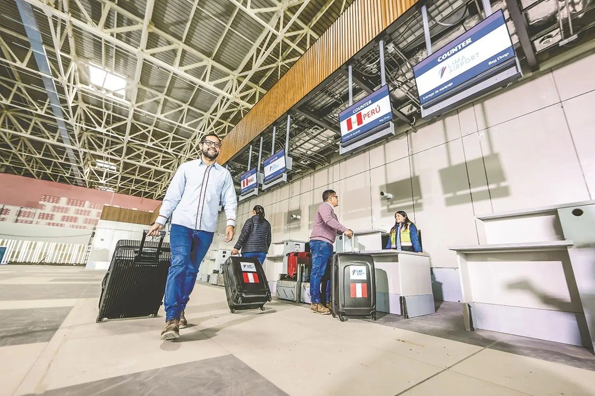
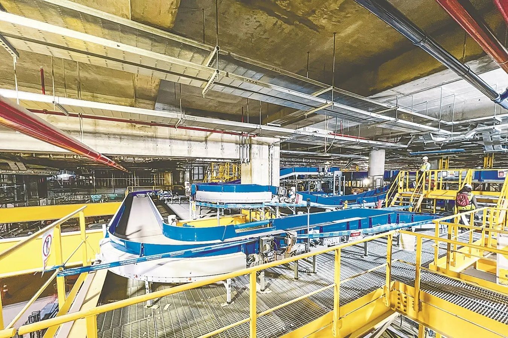
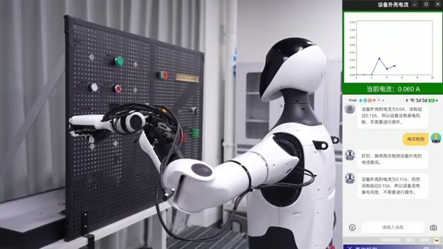
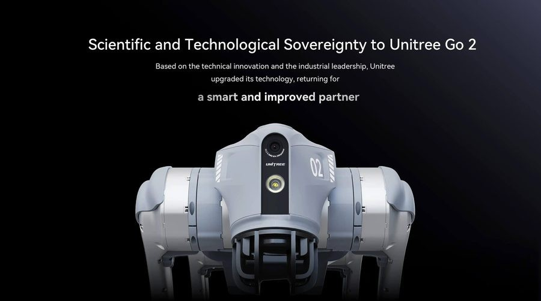
Reunión de alcance → MoU → 1–2 pilotos
SIGUIENTE PASO
goutech.site · veyon.dev · murobotics.ai
GOU: puente China–LATAM para universidades y empresas. Trabajamos de la mano con startups.